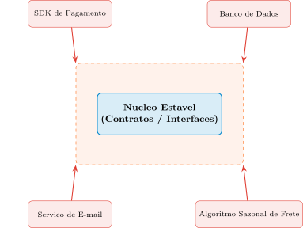
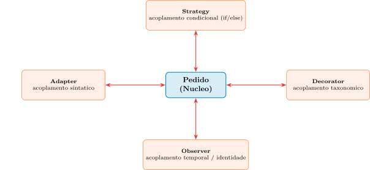

Aula 14 — Programação Orientada a Objetos (Aula de Encerramento)
2026-09-16
Nas últimas 4 aulas, o Pedido ganhou Strategy (Aula 10), Adapter (Aula 12), Decorator e Observer (Aula 13).
Esta é a última aula nova do curso. Não há um quinto padrão — há um passo atrás: o que esses quatro padrões têm, estruturalmente, em comum?
A resposta: uma única ideia arquitetural repetida 4 vezes — separar um núcleo estável (contratos, regras raramente mudam) de uma periferia volátil (implementações concretas, mudam por pressão de mercado).
Roteiro: a fronteira estável/volátil e a Regra de Ouro → a matriz de decisão dos 4 padrões → de volta à Aula 1 (TRUE) e ao encerramento do curso.
Problema motivador: 4 histórias aparentemente diferentes (if/else, SDK incompatível, explosão de subclasses, cascata de notificações) são, arquiteturalmente, o mesmo problema visto de 4 ângulos.
Padrões de projeto estabelecem linhas de demarcação estritas, não só organizam código. Toda arquitetura saudável separa um lado estável de um lado volátil.
Núcleo (estável): contratos, interfaces, regras de negócio abstratas — muda raramente, define o quê, não como.
Periferia (volátil): queries, protocolos de rede, SDKs de terceiros, algoritmos sazonais — muda por pressão externa ao domínio.
“O código estável nunca deve depender do código volátil. A dependência deve apontar sempre para as abstrações.”
Generaliza dois princípios já vistos separadamente: DIP (Aula 5) e OCP (Aula 10) — a regra fala de direção da dependência, não de proporção de código em cada lado.
Strategy, Adapter, Decorator e Observer introduzem interfaces sistematicamente — cada um funciona como uma junta de dilatação: os tremores da periferia morrem na barreira do contrato.

Cada elemento da periferia (vermelho) aponta para dentro da parede de abstração — nunca o núcleo (azul) aponta para fora dela.
Se a troca do banco de dados relacional de um sistema por um banco NoSQL não exigir nenhuma alteração de código na camada de regras de negócio, o que isso revela sobre como a fronteira entre núcleo e periferia foi desenhada — e onde exatamente mora essa fronteira?
Escreva sua resposta e compare com um colega antes de avançar (2 min).
Onde mora a fronteira, de fato — Resposta
Voltando à pergunta: a fronteira não mora “em algum lugar do código-fonte” de forma fixa — ela mora em qualquer ponto onde uma abstração intercepta uma decisão que muda por razões diferentes das razões que fazem o núcleo mudar. Estabilidade é sobre frequência e origem da mudança, não sobre “parecer lógica de negócio”.
| Padrão | Intenção | Quando usar |
|---|---|---|
| Strategy | Isolar algoritmos intercambiáveis. | Comportamento varia por contexto/regra volátil. |
| Adapter | Converter interface incompatível. | Integração com componente externo imutável. |
| Decorator | Anexar responsabilidades dinamicamente. | Herança geraria explosão combinatória. |
| Observer | Vínculo um-para-muitos, mudança de estado aciona dependentes. | Um fluxo precisa disparar reações em vários subsistemas. |
Strategy → acoplamento condicional (a cadeia de if/else).
Adapter → acoplamento sintático (assinatura incompatível com uma biblioteca externa).
Decorator → acoplamento taxonômico (herança rígida, decidida em compilação).
Observer → acoplamento temporal e de identidade (conhecer, por nome, cada subsistema que reage a um evento).
Nenhum dos quatro resolve o problema dos outros três — por isso podem coexistir na mesma classe Pedido, sem redundância.

As quatro setas partem do mesmo núcleo, mas cada uma atravessa uma parede de natureza diferente — sem sobreposição de responsabilidade.
Se um engenheiro precisa, ao mesmo tempo, trocar o algoritmo de cálculo de frete conforme a transportadora e notificar um número variável de sistemas externos sempre que um pedido é despachado, quantos padrões diferentes desta matriz ele provavelmente precisa combinar — e por que isso não contradiz a ideia de que cada padrão ataca um tipo específico de acoplamento?
Escreva sua resposta e compare com um colega antes de avançar (2 min).
PedidoSubject tivesse apenas um único observador registrado, e esse número nunca mudasse ao longo de toda a vida do sistema, aplicar o padrão Observer ainda traria o benefício estrutural de o núcleo não conhecer o tipo concreto desse observador, mesmo sem nenhum ganho vindo da quantidade de assinantes.Pedido nunca precisaria também aplicar Observer para notificar múltiplos subsistemas sobre esse mesmo Pedido.Quantos padrões, e por que não é contraditório — Resposta
PedidoSubject tivesse apenas um único observador registrado, e esse número nunca mudasse ao longo de toda a vida do sistema, aplicar o padrão Observer ainda traria o benefício estrutural de o núcleo não conhecer o tipo concreto desse observador, mesmo sem nenhum ganho vindo da quantidade de assinantes — o valor do Observer vem da cegueira de identidade entre Sujeito e Observador, não da cardinalidade da lista; um único assinante já se beneficia dessa cegueira.Pedido nunca precisaria também aplicar Observer para notificar múltiplos subsistemas sobre esse mesmo Pedido — falso: os dois padrões são ortogonais (acoplamento taxonômico vs. temporal/identidade) e coexistem sem conflito, exatamente como a cadeia de notificadores (Decorator) e a notificação de serviços independentes (Observer) da Aula 13 coexistiram sobre o mesmo Pedido.Voltando à pergunta: o engenheiro precisaria de pelo menos dois padrões — Strategy para a variação do algoritmo de frete (acoplamento condicional) e Observer para a notificação de sistemas externos variáveis (acoplamento temporal/identidade). Não há contradição porque cada padrão da matriz ataca um sintoma estrutural diferente; problemas compostos exigem combinações compostas, não a escolha de um único padrão “vencedor”.
O fio condutor do curso inteiro: máquina de estados (Aula 2) → contratos e Lei de Demeter (Aula 3) → decomposição e métricas (Aulas 4–5) → interfaces puras (Aula 6) → polimorfismo e LSP (Aulas 7–9) → os quatro padrões de isolamento (Aulas 10–13) — todos a mesma disciplina de pensamento: isolar o que muda pouco do que muda muito.
Mensagem de encerramento: projetar bem não é escrever código que nunca muda — é escrever código cujas mudanças ficam contidas exatamente onde deveriam ficar. Foi um prazer construir esse repertório com vocês ao longo do semestre.
UNICAMP — Instituto de Computação